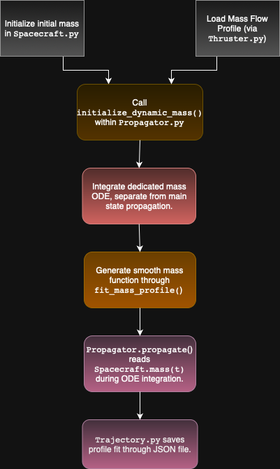

Mass Propagation in Scarabaeus#
Last updated by G. Fereoli — 2025 MAY 20
Overview#
To simulate spacecraft mass loss over time—such as during a finite (i.e., continuous) burn rather than an impulsive one—Scarabaeus requires correct initialization of the total mass \(m_0\) using an ArrayWUnits object when creating the Spacecraft instance.
To enable dynamic mass evolution, configure the propagator with mass_is_variable=True as shown below:
propagator = Propagator(
main_body=orbiter,
state_vector=state_vector,
tspan=epoch_array,
finite_burn=True,
mass_is_variable=True,
# ... other parameters ...
)
Setting mass_is_variable=True activates Scarabaeus’s internal mass propagation logic.
For this to function correctly:
The finite burn module must be enabled, meaning the finite burn force must be included in the list of active force models.
A valid mass flow rate profile must be loaded through a Thruster object, as it governs the time evolution of the spacecraft’s mass.
Mass Propagation Pipeline#
Sequence of called methods during mass propagation:
Initialization
Called at the start of
Propagator.propagate()whenmass_is_variable=True.Retrieves the initial mass \(m_0\) from
Spacecraft.mass(t_0).Initializes the internal mass flow function based on the configured thruster(s).
Integration Phase
Solves the differential equation \(\dot{m}(t) = -\dot{m}_\text{thruster}(t)\) over the specified
tspan.Uses
scipy.integrate.solve_ivpto compute discrete time-mass pairs \((t_k, m_k)\).
Polynomial Fitting
Uses
Polynomial.fit(t_k, m_k)to create a smooth polynomial approximation of \(m(t)\).The resulting polynomial is stored in
Spacecraft.mass_profile.
Force Evaluation
During ODE integration,
Spacecraft.mass(t)is queried at each evaluation point.ForceModel.compute_total_accelerationuses \(m(t)\) to correctly scale the applied forces.
Trajectory Construction (Post-Propagation)
Once propagation completes, you can construct a
Trajectoryobject that includes the fitted mass profile:trajectory = scb.Trajectory( "orbiter.bsp", state_array=propagator.propagated_state_array, mass_profile=propagator.mass_profile, )
The resulting polynomial coefficients are accessible via
trajectory.mass_profile.coef.You can query the mass at any epoch using
trajectory.mass(t).
Mass Propagation Architecture#

Mass Resolution Logic#
The method Body.mass(t) automatically handles constant and dynamic mass cases:
If mass_profile is an ArrayWUnits, a constant value is returned.
If it’s a Polynomial, it evaluates the polynomial at time t (float or EpochArray) and returns a corresponding ArrayWUnits.
In the Spacecraft subclass, the same interface applies. If mass_is_variable=True, the method switches internally to polynomial evaluation.
This abstraction cleanly separates internal logic from user interaction, ensuring mass consistency throughout the simulation.
Usage Example#
from scarabaeus import Spacecraft, Propagator, ArrayWUnits, EpochArray
import numpy as np
# Define spacecraft mass (dry + fuel)
dry = ArrayWUnits(1500.0, "kg")
fuel = ArrayWUnits(500.0, "kg")
orbiter = Spacecraft("Orbiter", mass=dry + fuel, ...)
# Define propagation time span
epochs = EpochArray(np.linspace(t0, t0 + 3600, 60), time_frame="TDB")
# Set up and run propagation
prop = Propagator(
main_body=orbiter,
state_vector=initial_state,
tspan=epochs,
finite_burn=True,
mass_is_variable=True,
)
prop.propagate()
# Inspect results
print("Mass polynomial coef:", orbiter.mass_profile.coef)
m_mid = orbiter.mass((t0 + t0 + 3600) / 2)
print(f"Mass at mid-burn: {m_mid}")